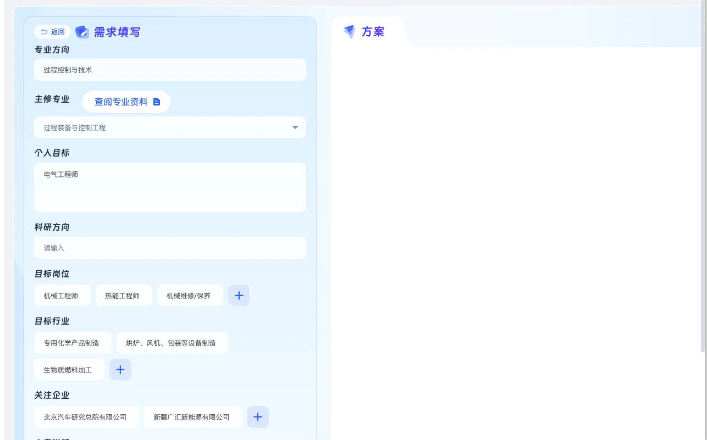
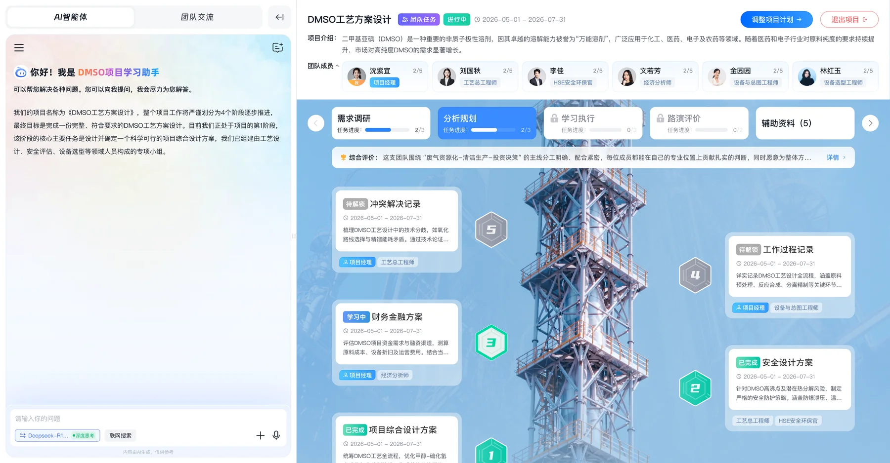
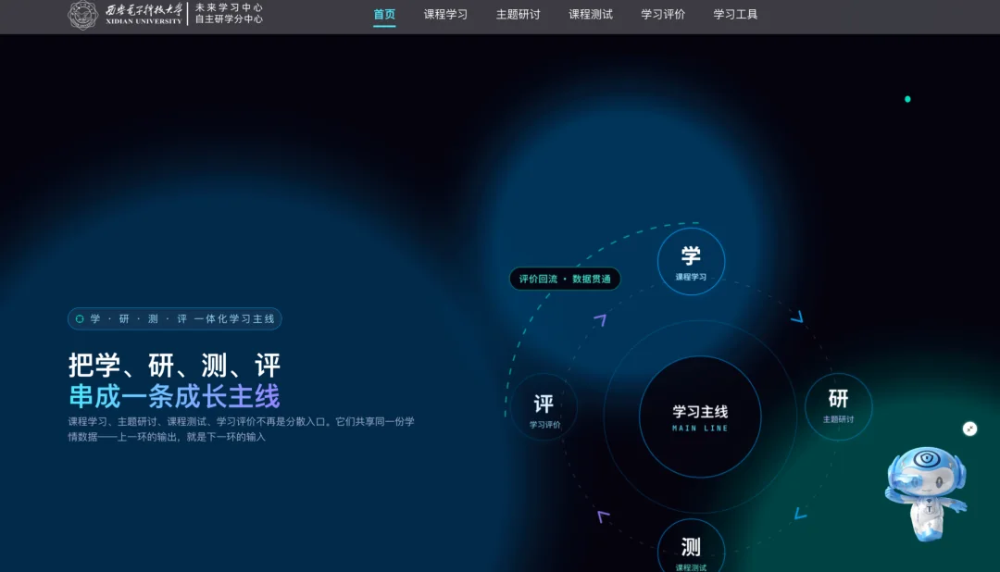
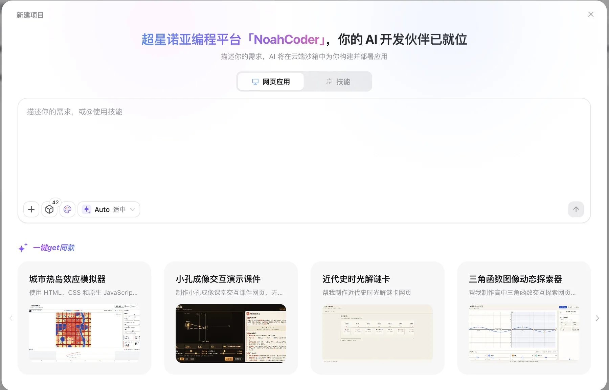
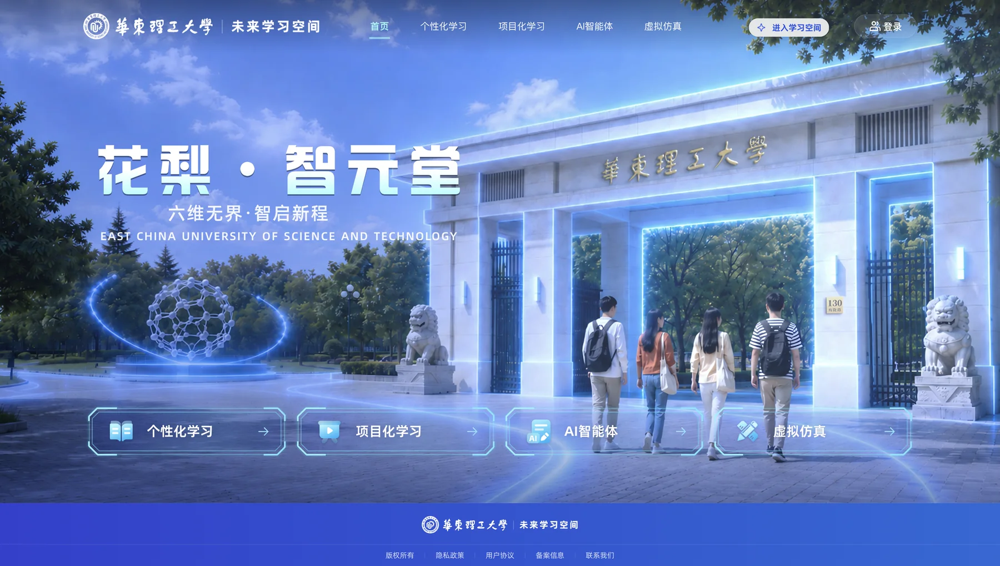
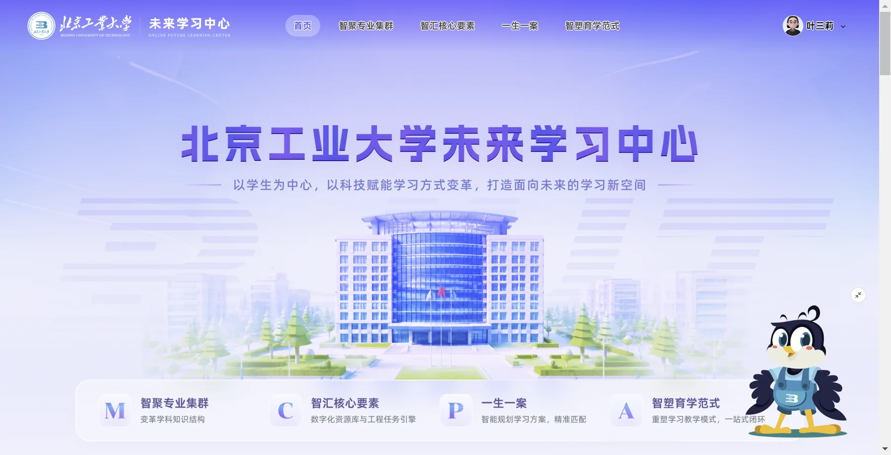
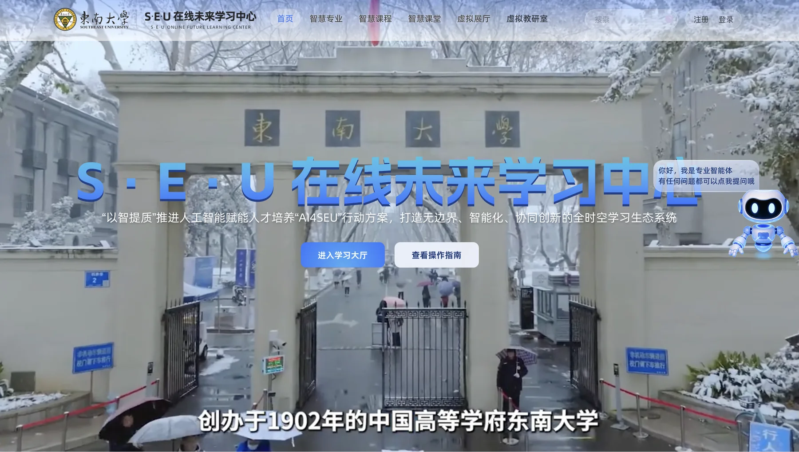
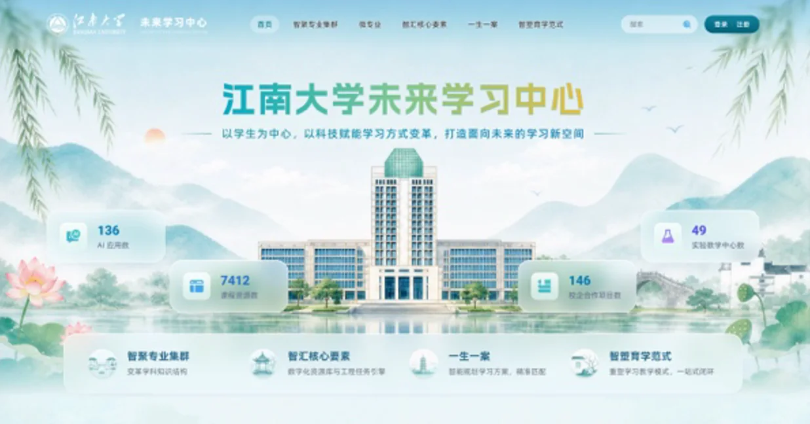
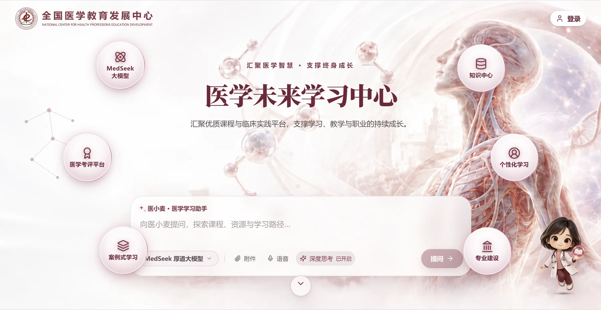

未来学习中心的中心不是技术，而是学习者。
阅读方式
先选择你的角色，再决定今天讨论到哪里
同一本蓝皮书，对校领导、教务处、学院和信息中心的阅读价值不同。网页先把阅读路径分开， 现场就不会从产品功能开始争论。
建议阅读顺序
先看战略与成果- 执行摘要：未来学习中心为什么现在
- 总报告：学习方式六个转变
- 建设路径：四步走与学校特色
- 案例图谱：哪些学校已经跑起来
执行摘要
未来学习中心，必须先把学习讲明白
全书不从产品功能开始，而从一个更根本的问题开始：未来的学生应该怎么学，学校应该如何组织学习。
一句话定义
以学生成长为中心、以能力达成为目标、以 AI 为伙伴、以数据为改进依据的学习新基础设施。
学习目标不是知识堆积，而是能力达成。
统一培养方案将走向统一底线加个性路径。
个性化学习是入口，项目化学习是载体，自主学习是目标。
资源不再只是被观看，而要能被关联、调用和重组。
AI 不再只是问答工具，而要成为懂学校和懂专业的 AI 老师。
工具不再孤立存在，而要能够按真实场景灵活组装。
评价不再只看结果，而要看见过程、看见成长。
每所学校都应拥有适合自己的未来学习中心。
最终成果，是让学生获得持续成长的能力。
全书总图
从趋势到范式，从支撑能力到学校落地
第二版不再让三个关键词平铺成目录，而是把它们放回完整逻辑中：先解释学习方式变化，再说明靠什么支撑， 最后落到评价、建设和案例。
四个未来、六个转变
个性化、项目化、自主学习
新资源、新伙伴、新工具
过程可见、成长可证
千校千面、持续运营
总报告 · 第一章 四个未来：未来学习中心的时代坐标
未来课堂、未来学校、未来学习中心、未来教师共同构成未来教育图景。未来学习中心不是孤立项目， 而是承载师、生、机协同，连接课程、资源、实践与评价的学习新基础设施。
- 未来课堂：师、生、机三元协同。
- 未来学校：智能进入管理、服务与决策。
- 未来学习中心：能力驱动、泛在智能、多模态响应。
- 未来教师：AI 进入备课、教研与辅导。
总报告 · 第二章 学习方式的六个转变
基于课程基于项目
知识传授能力达成
教师中心学生中心
统一培养方案一生一案
固定学习内容个性化路径
师生二元互动师生机三元互动
总报告 · 第三章 定义、边界与六项判断标准
未来学习中心不是智慧教室，不是资源仓库，不是单一平台，也不是套壳问答机器人。 判断标准应当回到学习本身：学生中心、能力本位、个性路径、项目实践、自主学习、过程评价。
专题篇 · 三类学习范式
个性化是入口，项目化是载体，自主学习是目标
这三类范式不是三套产品，而是未来学习中心要运行起来的学习方式。每类范式都要同时回答： 学校为什么做、学生怎么用、教师和管理者怎么接住。
01 · 个性化学习
从统一进度到一生一案
个性化不是降低标准，而是在统一能力底线之上，为每个学生找到更适合的成长路径。
- 目标共创、能力诊断、画像构建。
- 路径设计、资源匹配、阶段反馈。
- 专业方向、职业倾向、目标行业共同进入方案。
讨论：学校现在有哪些数据足以支撑“一生一案”？

02 · 项目化学习
从知识讲授到真实问题解决
项目化学习让知识在真实任务中发生，让能力在协作过程中形成。
- AI 辅助任务拆解、组队分工和过程答疑。
- 项目门户、进度、小组、资料与成果统一管理。
- 从课堂项目扩展到校企、校地和跨校项目。
讨论：哪一类真实项目最适合先做出标杆？

03 · 自主学习
从被动管理到自我驱动
自主学习的终点，不是学生独自学习，而是学生能够管理目标、调节策略并持续反思。
- 学、研、测、评一体化学习主线。
- 目标管理、过程监控、策略调整、反思复盘。
- AI 提供支持，但不代替学生思考。
讨论：什么样的学习证据能证明学生真的更自主了？

支撑篇 · 三大支撑能力
从资源、伙伴到工具，把学习新范式真正支撑起来
老板 PPT 的三大关键词在这里不是目录标题，而是学习范式背后的支撑能力。对客户解释时， 先用“新资源、新伙伴、新工具”说人话，再在方案中对应到产品架构。
01
新资源：从资源汇聚到可重组的知识网络
资源不再只是静态收藏，而是可以被理解、关联、调用和重组的学习材料。课程、教材、实践、图书馆、 国际合作资源进入同一个知识网络。
AI 知识库垂域模型元宇宙课程虚拟仿真
学校获得什么
原有资源被盘活，课程和能力、项目、评价开始建立关系。
02
新伙伴：懂学校、懂专业、懂你的 AI 老师
从单位专属升级为一人专属。智能体通过画像、Skill、长期记忆、知识库和权限策略， 成为学生的 AI 学伴、教师的 AI 助教和学校的 AI 导师。
过程透明记忆可续知识溯源多渠道接入
03
新工具：从功能模块到可组装的学习引擎
项目引擎、个性化学习引擎、图谱引擎、任务引擎、AI 编程引擎等不再孤立存在， 而是按真实场景灵活组装，直接进入教学、实践、评价和管理流程。
项目引擎图谱引擎任务引擎NoahCoder

建设篇
从一个真实学习问题开始，走到学校自己的未来学习中心
蓝皮书不能只给愿景，还要告诉学校怎么动手。建设路径应当是诊断、试点、共建、推广，而不是一次性堆平台。
-
01
场景诊断
确认一个真实学习问题，明确学生、教师和管理者各自要改变什么。
-
02
单点试点
先做一门课、一个专业或一个学院，让资源、AI 伙伴、工具和评价真正跑起来。
-
03
学院或专业共建
形成可复制场景，沉淀课程、知识库、智能体和数据指标。
-
04
校级推广与运营
统一底座、开放集成、持续运营，形成学校的个性化学习体系。
案例篇
案例不是荣誉墙，是客户对号入座的证据库
每个案例都必须回答：学校原来有什么问题、用了哪类学习范式、建设了哪些资源、AI 做什么、工具怎么进入流程、最后有什么成效。

校级 · 综合平台
华东理工大学
以“六维无界”重构学习空间，个性化、项目化、智能体和虚拟仿真形成统一入口。

试点高校 · 一生一案
北京工业大学
以学生为中心汇聚多源数据生成画像，把个体问题转化为学习任务，落实一生一案。

智慧专业 · 智慧课程
东南大学
以 S·E·U 三大板块贯通探索、学习与成长，构建一站式个性化智慧学习生态。

千人千面 · 能力本位
江南大学
以学生为中心、能力为本位，整合智慧课程、微专业、项目实践与 AI 矩阵。

学科垂域 · AI 老师
医学未来学习中心
以垂类大模型和医学知识库为底座，孵化模拟医院、AI 病人和 SP 培训智能体。
自主学习 · 学研测评
西安电子科技大学
把课程学习、主题研讨、课程测试和学习评价串成一条成长主线。
成熟度自测
学校现在走到哪一步？
这不是正式评估，而是一个帮助沙龙快速形成共识的小工具。勾选已经具备的能力， 看看学校更接近资源汇聚期、场景试点期还是能力融合期。
0/ 6
当前判断
资源汇聚期
先把资源、入口和统一数据基础梳理清楚。
现场研讨
今天不需要得出全部结论，但要先把问题问对
每组选择 2 至 3 个问题讨论，讨论结果可以直接沉淀到下一版蓝皮书的章节调整中。
10:00
已讨论 0 / 6
建议提交物
沙龙结束后形成：章节优先级、案例授权清单、首发场景与首批目标客户。